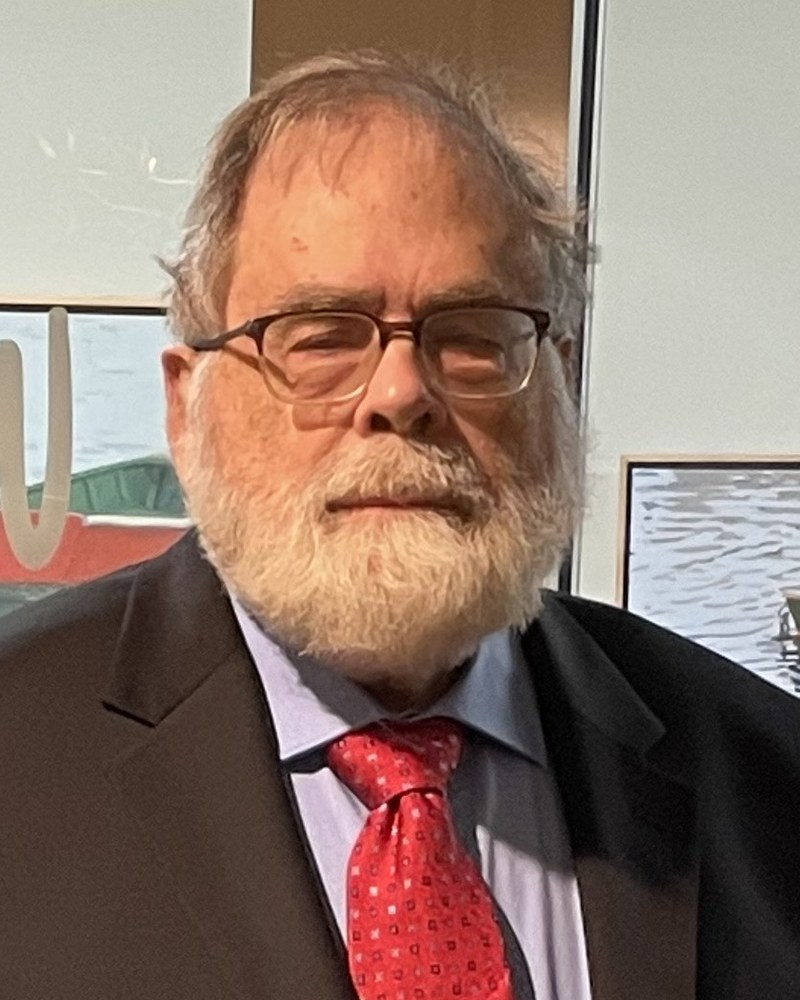

University of Southern Maine, Portland, ME, USA

Three events need to be viewed with respect to their connection with each other. In 1935, EPR proposed that there was something that quantum mechanics could not do. They observed that the solutions to Schrodinger's equation for two-component processes included several solutions that could not be factored into sub-processes in which the process could be described as the cumulative interaction of the sub-processes. These unfactorable states were subsequently called the "Bell States." EPR claimed that quantum mechanics could not account for this interaction, and that it must be described by a "variable" hidden from the solutions to Schrodinger's equation. Subsequently, Bell offered a straightforward "proof by contradiction" that any such "hidden variable" that accounts for the "Bell states" must necessarily be non-local, in effect, irreducible to mathematical representation. That also implies that the "hidden variable" describes "top-down" or a form of "final" causation, the influence of the whole upon its parts due to their membership in the whole. In 2022, Aspect won the Nobel Prize in Physics for demonstrating that instances of the "Bell States" are observed in reality. This supersedes Einstein's claim that quantum mechanics is incomplete with the more sweeping notion that the entire reductionist paradigm is incomplete. The ontological implication of these three juxtaposed events is profound. In orthodox materialism, an axiomatic claim is that literally every event in reality is nothing more than the cumulative effect of the interaction of smaller parts. The direct corollary of the axiom is that any hypothesis involving holistic influences can be dismissed out of hand, since it violates a fundamental tenet of materialism. The observed existence of a holistic effect (i.e., entangled behavior) is a sufficient counterexample to falsify the axiom that all events in reality are the cumulative effect of interactions of smaller parts. This does not "prove" holism. However, to falsify a holistic hypothesis, a compelling reason for its falsification is necessary. Holistic hypotheses are legitimate grist for rational investigation. There is another extreme perspective, the notion that everything is entangled with everything else. Believers in this extreme perspective tend to be frozen in paralyzed awe at the "wholeness" of the universe, and imagine that a universe beyond the scope of materialism must be beyond rational interpretation. In its turn this leads to a prejudice that any guess about the workings of reality is just as good as any other. There is nothing in the work of EPR, or Bell, or Aspect that supports this conclusion. It is much more reasonable to suppose that just as the constraints on the action of material processes are described by "Laws of Nature," the constraints on the action of non-material processes are expected to be described by a more general set of (as yet undiscovered) "Laws of Supernature." This concept is seldom considered in the contemporary academic world. However, a starting point for the investigation of a more general set of (as yet undiscovered) "Laws of Supernature" is Jung's concept of archetypes.
Dr. Stephen W Kercel has a PhD in electrical engineering with research specialites in artificial intelligence and electromagnetic effects. He designed 500-kV switchyards at Tennessee Valley Authoritiy nuclear facilities. As a contract employee for the US Department of Energy, he collected the experimental data used to develop NUREG documents that assure the electromagnetic hardening of digital control systems in nuclear powerplant control rooms. In his work for US-DOE, he won two R&D 100 awards. He has aapproximately 100 technical publications. Subsequently, he worked as a Research Adjunct Professor in the Department of Psychology at the University of New England, where he investigated human-machine interaction. For the past 6 years he has been a member of the faculty at the Osher Lifelong Learning Institute at the University of Southern Maine and has taught numerous courses on the nature of consciousness, emphasizing the work of Schopenhauer and Jung. He has also been a featured speaker at the Maine Jung Center. He presented a poster session on "The Hard Problem of Consciousness" at the 2023 TSC.